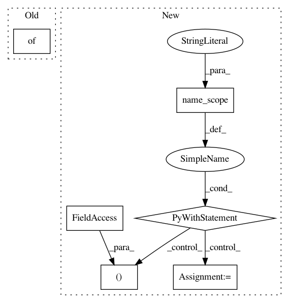

76bfb4027c2a04d1d65dbfc3befdc2805133c957,tensorflow_transform/analyzers.py,,uniques,#Any#Any#Any#,155
Before Change
values = x.tensor.values
else:
values = x.tensor
arg_dict = {"top_k": top_k, "frequency_threshold": frequency_threshold}
// Create output placeholder whose shape is a 1-d tensor of unkown size.
// pylint: disable=protected-access
return api._AnalyzerOutput(tf.placeholder(values.dtype, (None,)),
api.CanonicalAnalyzers.UNIQUES, [x], arg_dict)
After Change
frequency_threshold)
if isinstance(x, tf.SparseTensor):
x = x.values
with tf.name_scope("uniques"):
spec = UniquesSpec(x.dtype, top_k, frequency_threshold)
return Analyzer([x], [(x.dtype, [None])], spec).outputs[0]
In pattern: SUPERPATTERN
Frequency: 3
Non-data size: 6
Instances
Project Name: tensorflow/transform
Commit Name: 76bfb4027c2a04d1d65dbfc3befdc2805133c957
Time: 2017-05-16
Author: no-reply@google.com
File Name: tensorflow_transform/analyzers.py
Class Name:
Method Name: uniques
Project Name: tensorlayer/tensorlayer
Commit Name: a6652b0c1997bb47dd502bf674e0b3b9b2d09d23
Time: 2019-05-16
Author: 1402434478@qq.com
File Name: examples/reinforcement_learning/tutorial_bipedalwalker_a3c_continuous_action.py
Class Name: ACNet
Method Name: choose_action
Project Name: tensorlayer/tensorlayer
Commit Name: 6ca2a6359dc1374bfb211da8680f3d5f319cdaa5
Time: 2019-05-16
Author: 1402434478@qq.com
File Name: examples/reinforcement_learning/tutorial_bipedalwalker_a3c_continuous_action.py
Class Name: ACNet
Method Name: choose_action